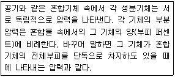
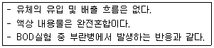
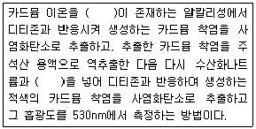
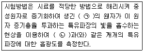
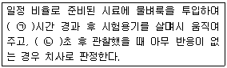
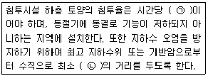

수질환경산업기사 (2018-03-04 기출문제)
1과목: 수질오염개론
1. 정체된 하천수역이나 호소에서 발생되는 부영양화 현장의 주 원인물질은?
- 인
- 중금속
- 용존산소
- 유류성분
(정답률: 85%)

2. 호수의 성층현상에 관한 설명으로 알맞지 않은 것은?
- 겨울에는 호수 바닥의 물이 최대 밀도를 나타내게 된다.
- 봄이 되면 수직운동이 일어나 수질이 개선된다.
- 여름에는 수직운동이 호수 상층에만 국한된다.
- 수심에 따른 온도변화로 인해 발생되는 물의 밀도차에 의해 일어난다.
(정답률: 78%)
3. 지하수의 특성에 관한 설명으로 틀린 것은?
- 토양수 내 유기물질 분해에 따른 CO2의 발생과 약산성의 빗물로 인한 광물질의 침전으로 경도가 낮다.
- 기온의 영향이 거의 없어 연중 수온의 변동이 적다.
- 하천수에 비하여 흐름이 완만하여 한번 오염된 후에는 회복되는데 오랜 시간이 걸리며 자정작용이 느리다.
- 토양의 여과작용으로 미생물이 적으며 탁도가 낮다.
(정답률: 79%)
4. 1차 반응에서 반응 초기의 농도가 100mg/L이고, 반응 4시간 후에 10mg/L로 감소되었다. 반응 3시간 후의 농도(mg/L)는?
- 10.8
- 14.9
- 17.8
- 22.3
(정답률: 75%)
5. Whipple의 하천자정단계 중 수중에 DO가 거의 없어 혐기성 Bacteria가 번식하며, CH4, NH+4-N 농도가 증가하는 지대는?
- 분해지대
- 활발한 분해지대
- 발효지대
- 회복지대
(정답률: 84%)
6. 산성 강우의 주요 원인물질로 가장 거리가 먼 것은?
- 황산화물
- 염화불화탄소
- 질소산화물
- 염소화합물
(정답률: 68%)
7. 환경공학 실무와 관련하여 수중의 질소농도 분석과 가장 관계가 적은 것은?
- 소독
- 호기성 생물학적 처리
- 하천의 오염 제어 계획
- 폐수처리에서의 산, 알칼리 주입량 산출
(정답률: 58%)
8. PCB에 관한 설명으로 알맞는 것은?
- 산, 알칼리, 물과 격렬히 반응하여 수소를 발생시킨다.
- 만성질환증상으로 카네미유증이 대표적이다.
- 화학적으로 불안정하며 반응성이 크다.
- 유기용제에 난용성이므로 절연제로 활용된다.
(정답률: 72%)
9. 0.01N 약산이 2% 해리되어 있을 때 이 수용액의 pH는?
- 3.1
- 3.4
- 3.7
- 3.9
(정답률: 72%)
10. 생물학적 폐수처리시의 대표적인 미생물인 호기성 Bacteria의 경험적 분자식을 나타낸것은?
- C2H5O3N
- C2H7O5N
- C5H7O2N
- C5H9O3N
(정답률: 88%)
11. 수질오염지표로 대장균을 사용하는 이유로 알맞지 않는 것은?
- 검출이 쉽고 분석하기가 용이하다.
- 대장균이 병원균보다 저항력이 강하다.
- 동물의 배설물 중에서 대체적으로 발견된다.
- 소독에 대한 저항력이 바이러스보다 강하다.
(정답률: 82%)
12. 활성슬러지나 살수여상 등에서 잘 나타나는 Vorticella가 속하는 분류는?
- 조류(Algae)
- 균류(Fungi)
- 후생동물(Metazoa)
- 원생동물(Protozoa)
(정답률: 71%)
13. 생물학적 질화 반응 중 아질산화에 관한 설명으로 틀린 것은?
- 관련 미생물 : 독립영양성 세균
- 알칼리도 : NH+4-N산화에 알칼리도 필요
- 산소 : NH+4-N산화에 O2필요
- 증식속도 : gNH+4-N/gMLVSSㆍhr로 표시
(정답률: 69%)
14. 농업용수 수질의 척도인 SAR을 구할 때 포함되지 않는 항목은?
- Ca
- Mg
- Na
- Mn
(정답률: 91%)
15. 탈산소계수가 0.1day-1인 오염물질의 BOD5가 800 mg/L이라면 4일 BOD(mg/L)는?
- 653
- 685
- 704
- 732
(정답률: 77%)
16. 다음 설명에 해당하는 기체 법칙은?

- Dalton의 부분 압력 법칙
- Henry의 부분 압력 법칙
- Avogadro의 부분 압력 법칙
- Boyle의 부분 압력 법칙
(정답률: 81%)
17. 다음과 같은 용액을 만들었을 때 몰 농도가 가장 큰 것은?
- 3.5L 중 NaOH 150g
- 30mL 중 H2SO4 5.2g
- 5L 중 Nacl 0.2kg
- 100mL 중 HCl 5.5g
(정답률: 75%)
18. 인축(人畜)의 배설물에서 일반적으로 발견되는 세균이 아닌 것은?
- Escherchia-Coli
- Salmonella
- Acetobacter
- Shigella
(정답률: 69%)
19. Formaldehyde(CH2O)의 COD/TOC의 비는?
- 2.67
- 2.88
- 3.37
- 3.65
(정답률: 73%)
20. 수자원 종류에 대해 기술한 것으로 틀린 것은?
- 지표수는 담수호, 염수호, 하천수 등으로 구성되어 있다.
- 호수 및 저수지의 수질변화의 정도나 특성은 배수지역에 대한 호수의 크기, 호수의 모양, 바람에 의한 물의 운동 등에 의해서 결정된다.
- 천수는 증류수 모양으로 형성되며 통상 25℃, 1기압의 대기와 평형상태인 증류수의 이론적인 pH는 7.2이다.
- 천층수에서 유기물은 미생물의 호기성활동에 의해 분해되고, 심층수에서 유기물분해는 혐기성상태하에서 환원작용이 지배적이다.
(정답률: 61%)
2과목: 수질오염방지기술
21. 부피가 1000m3인 탱크에서 평균속도 경사(G)를 30s-1로 유지하기 위해 필요한 이론적 소요동력(W)은? (단, 물의 점성계수(μ) = 1.139 × 10-3Nㆍs/m2)
- 1025
- 1250
- 1425
- 1650
(정답률: 57%)
22. 무기성 유해물질을 함유한 폐수 배출업종이 아닌 것은?
- 전기도금업
- 염색공업
- 알칼리세정시설업
- 유지제조업
(정답률: 66%)
23. 1000mg/L의 SS를 함유하는 폐수가 있다. 90%의 SS제거를 위한 침강속도는 10mm/min이었다. 폐수의 양이 14400m3/day일 경우 SS 90% 제거를 위해 요구되는 침전지의 최소수면적(m2)은?(오류 신고가 접수된 문제입니다. 반드시 정답과 해설을 확인하시기 바랍니다.)
- 900
- 1000
- 1200
- 1500
(정답률: 49%)
24. 혐기성 처리에서 용해성 COD 1kg이 제거되어 0.15kg은 혐기성 미생물로 성장하고 0.85kg은 메탄가스로 전환된다면 용해성 COD 100kg의 이론적인 메탄 생성량(m3)은? (단, 용해성 COD는 모두 BDCOD이며 메탄 생성률은 0.35m3/kg COD)
- 약 16.2
- 약 29.8
- 약 36.1
- 약 41.8
(정답률: 50%)
25. 하수처리를 위한 심층포기법에 관한 설명으로 틀린 것은?
- 산기수심을 깊게 할수록 단위 송풍량당 압축동력이 커져 송풍량에 따른 소비동력이 증가한다.
- 수심은 10m 정도로 하며, 형상은 직사각형으로 하고, 폭은 수심에 대해 1배 정도로 한다.
- 포기조를 설치하기 위해서 필요한 단위 용량당 용지면적은 조의 수심에 비례해서 감소하므로 용지이용률이 높다.
- 산기수심이 깊을수록 용존질소농도가 증가하여 이차침전지에서 과포화분의 질소가 재기 포화되는 경우가 있다.
(정답률: 41%)
26. 생물학적 처리에서 질산화와 탈질에 대한 내용으로 틀린 것은? (단, 부유성장 공정 기준)
- 질산화 박테리아는 종속영양 박테리아보다 성장속도가 느리다.
- 부유성장 질산화 공정에서 질산화를 위해서는 최소 2.0mg/L 이상의 DO농도를 유지하여야 한다.
- Nitrosomonas와 Nitrocacter는 질산화시키는 미생물로 알려져 있다.
- 질산화는 유입수의 BOD5/TKN 비가 클수록 잘 일어난다.
(정답률: 63%)
27. 슬러지 반송률이 50%이고 반송슬러지 농도가 9000mg/L일 때 포기조의 MLSS농도(mg/L)는?
- 2300
- 2500
- 2700
- 3000
(정답률: 60%)
28. 살수여상법에서 연못화(ponding)현상의 원인이 아닌 것은?
- 여재가 불균일할 때
- 용존산소가 부족할 때
- 미처리 고형물이 대량 유입할 때
- 유기물부하율이 너무 높을 때
(정답률: 61%)
29. 슬러지 함수율이 95%에서 90%로 낮아지면 전체 슬러지의 감소된 부피의 비(%)는? (단, 탈수 전후의 슬러지 비중 = 1.0)
- 15
- 25
- 50
- 75
(정답률: 74%)
30. 정수처리 단위공정 중 오존(O3)처리법의 장점이 아닌 것은?
- 소독부산물의 생성을 유발하는 각종 전구물질에 대한 처리효율이 높다.
- 오존은 자체의 높은 산화력으로 염소에 비하여 높은 살균력을 가지고 있다.
- 전염소처리를 할 경우, 염소와 반응하여 잔류염소를 증가시킨다.
- 철, 망간의 산화능력이 크다.
(정답률: 73%)
31. 염소소독에서 염소의 거동에 대한 내용으로 틀린 것은?
- pH 5 또는 그 이하에서 대부분의 염소는 HOCl은 형태이다.
- HOCl은 암모니아와 반응하여 클로라민을 생성한다.
- HOCl은 매우 강한 소독제로 OCl-보다 약 80배 정도 더 강하다.
- 트리클로라민(NCl3)은 매우 안정하여 잔류 산화력을 유지한다.
(정답률: 68%)
32. 유량 300m3/day, BOD 200mg/L인 폐수를 활성슬러지법으로 처리하고자 할 때 포기조의 용량(m3)은?(단, BOD용적부하 0.2KG/m3 day)
- 150
- 200
- 250
- 300
(정답률: 62%)
33. 활성슬러지 변법인 장기포기법에 관한 내용으로 틀린 것은?
- SRT를 길게 유지하는 동시에 MLSS농도를 낮게 유지하여 처리하는 방법이다.
- 활성슬러지가 자산화되기 때문에 잉여슬러지의 발생량은 표준활성슬러지법에 비해 적다.
- 과잉 포기로 인하여 슬러지의 분산이 야기되거나 슬러지의 활성도가 저하되는 경우가 있다.
- 질산화가 진행되면서 pH는 저하된다.
(정답률: 56%)
34. 고형물 상관관계에 대한 표현으로 틀린 것은?
- TS = VS + FS
- TSS = VSS + FSS
- VS = VSS + VDS
- VSS = FSS+ FDS
(정답률: 77%)
35. 살수여상을 저속, 중속, 고속 및 초고속 등으로 분류하는 기준은?
- 재순환 횟수
- 살수간격
- 수리학적 부하
- 여재의 종류
(정답률: 76%)
36. 다음 설명에 적합한 반응기의 종류는?

- 연속흐름완전혼합반응기
- 플러그흐름반응기
- 임의흐름반응기
- 완전혼합회분식반응기
(정답률: 74%)
37. 침전지 유입 폐수량 400m3/day, 폐수 SS 500mg/L, SS제거효율 90%일 때 발생되는 슬러지의 양(m3/day)은? (단, 슬러지의 비중 1.0, 슬러지의 함수율 97%, 유입폐수 SS만 고려, 생물학적 분해는 고려하지 않음)
- 약 6
- 약 10
- 약 14
- 약 20
(정답률: 52%)
38. 8kg glucose(C6H12O6)로부터 이론적으로 발생 가능한 CH4가스의 양(L)은? (단, 표준상태, 혐기성 분해 기준)
- 약 1500
- 약 2000
- 약 2500
- 약 3000
(정답률: 53%)
39. 수은 함유 폐수를 처리하는 공법으로 가장 거리가 먼 것은?
- 황화물 침전법
- 아말감법
- 알칼리 환원법
- 이온교환법
(정답률: 46%)
40. 폐수처리장에서 방류된 처리수를 산화지에서 재처리하여 최종 방류하고자 한다. 낮 동안 산화지 내의 DO농도가 15mg/L로 포화농도보다 높게 측정되었을 때 그 이유는?
- 산화지의 산소흡수계수가 높기 때문
- 산화지에서 조류의 탄소동화작용
- 폐수처리장 과포기
- 산화지 수심의 온도차
(정답률: 72%)
3과목: 수질오염공정시험방법
41. 생물화학적산소요구량(BOD)의 측정 방법에 관한 설명으로 틀린 것은?
- 시료를 20℃에서 5일간 저장하여 두었을 때 시료중의 호기성 미생물의 증식과 호흡작용에 의하여 소비되는 용존산소의 양으로부터 측정하는 방법이다.
- 산성 또는 알카리성 시료의 pH 조절 시 시료에 첨가하는 산 또는 알칼리의 양이 시료량의 1.0%가 넘지 않도록 하여야 한다.
- 시료는 시험하기 바로 전에 온도를 (20±1)℃로 조정한다.
- 잔류염소를 함유한 시료는 Na2SO3용액을 넣어 제거한다.
(정답률: 62%)
42. 수질오염공정시험기준상 원자흡수분광광도법으로 측정하지 않는 항목은?
- 불소
- 철
- 망간
- 구리
(정답률: 70%)
43. 하수의 DO를 윙클러-아지드변법으로 측정한 결과 0.025M-Na2SO3의 소비량은 4.1mL였고, 측정병 용량은 304mL, 검수량은 100mL, 그리고 측정병에 가한 시액량은 4mL였을 때 DO 농도(mg/L)는? (단,0.025MNa2SO3의 역가 = 1.000)
- 약 4.3
- 약 6.3
- 약 8.3
- 약 9.3
(정답률: 44%)
44. 카드뮴 측정원리(자외선/가시선 분광법 : 디티존법)에 관한 내용으로 ( )에 공통으로 들어가는 내용은?

- 시안화칼륨
- 염화제일주석산
- 분말아연
- 황화나트륨
(정답률: 76%)
45. 페놀류 측정에 관한 설명으로 틀린 것은? (단, 자외선/가시선분광법 기준)
- 붉은색의 안티피린계 색소의 흡광도를 측정하는 방법으로 수용액에서는 510nm에서 측정한다.
- 붉은색의 안티피린계 색소의 흡광도를 측정하는 방법으로 클로로폼 용액에서는 460nm에서 측정한다.
- 추출법일 때 정량한계는 0.5mg/L이다.
- 직접법일 때 정량한계는 0.⑤mg/L이다.
(정답률: 66%)
46. 디티존법으로 측정할 수 있는 물질로만 구성된 것은?
- Cd, Pb, Hg
- As, Fe, Mn
- Cd, Mn, Pb
- As, Ni, Hg
(정답률: 65%)
47. 츨정 시료 채취 시 반드시 유리용기를 사용해야 하는 측정항목은?
- PCB
- 불소
- 시안
- 셀레늄
(정답률: 62%)
48. 시안분석을 위하여 채취한 시료의 보존방법에 관한 내용으로 틀린 것은?
- 잔류염소가 공존할 경우 시료 1L당 아스코르빈산 1g을 첨가한다.
- 산화제가 공존할 경우에는 시안을 파괴할 수 있으므로 채수 즉시 황산암모늄철을 시료 1L당 0.6g 첨가한다.
- NaOH로 pH 12 이상으로 하여 4℃에서 보관한다.
- 최대 보존 기간은 14일 정도이다.
(정답률: 46%)
49. 자외선/가시선분광법에 사용되는 흡수셀에 대한 설명으로 틀린 것은?
- 흡수셀의 길이를 지정하지 않았을 때는 10mm셀을 사용한다.
- 시료액의 흡수파장이 약 370nm이상일 때는 석영셀 또는 경질유리셀을 사용한다.
- 시료액의 흡수파장이 약 370nm이하일 때는 석영셀을 사용한다.
- 대조셀에는 따로 규정이 없는 한 원시료를 셀의 6부까지 채워 측정한다.
(정답률: 67%)
50. COD 분석을 위해 0.02M-KMnO4용액 2.5L을 만들려고 할 때 필요한 KMnO4의 양(g)은?(단, KMnO4 분자량 = 158)
- 6.2
- 7.9
- 8.5
- 9.7
(정답률: 59%)
51. 노말헥산 추출물질을 측정할 때 지시약으로 사용되는 것은?
- 메틸레드
- 페놀프탈레인
- 매틸오렌지
- 전분용액
(정답률: 84%)
52. 시안화합물을 함유하는 폐수의 보존방법으로 옮은 것은?
- NaOH 용액으로 pH를 9이상으로 조절하여 4℃에서 보관한다.
- NaOH 용액으로 pH를 12이상으로 저절하여 4℃에서 보관한다.
- H2SO4용액으로 pH를 4이하로 저절하여 4℃에서 보관한다.
- H2SO4용액으로 pH를 2이하로 조절하여 4℃에서 보관한다.
(정답률: 65%)
53. 총질소의 측정방법으로 틀린 것은?
- 염화제일주석환원법
- 카드뮴환원법
- 환원증류-킬달법(합산법)
- 자외선/가시선분광법
(정답률: 48%)
54. 농도표시에 관한 설명으로 틀린 것은?
- 십억분율을 표시할 때는 μg/L, ppb의 기호로 쓴다.
- 천분율을 표시할 때는 g/L, ‰의 기호로 쓴다.
- 용액의 농도는 %로만 표시할 때는 V/V%, W/W%를 나타낸다.
- 용액 100g 중 성분용량(mL)을 표시할 때는 V/W%의 기호로 쓴다.
(정답률: 72%)
55. 원자흡수분광광도법에 관한 설명으로 ( )에 옳은 내용은?

- ㉠ 여기상태, ㉡ 근접선
- ㉠ 여기상태, ㉡ 원자흡광
- ㉠ 바닥상태, ㉡ 공명선
- ㉠ 바닥상태, ㉡ 광전측광
(정답률: 73%)
56. 수질오염공정시험기준에서 사용하는 용어에 관한 설명으로 틀린 것은?
- ‘정확히 취하여’라 하는 것은 규정한 양의 검체 또는 시액을 홀피펫으로 눈금까지 취하는 것을 말한다.
- ‘냄새가 없다’라고 기재한 것은 냄새가 없거나 또는 거의 없을 것을 표시하는 것이다.
- ‘온수’는 60~70℃를 말한다.
- ‘감압 또는 진공’이라 함은 따로 규정이 없는 한 15mmH2O 이하를 말한다.
(정답률: 89%)
57. 물벼룩을 이용한 급성 독성 시험법에서 적용되는 용어인 ‘치사’의 정의에 대한 설명으로 ( )에 옳은 것은?

- ㉠ 12, ㉡ 15
- ㉠ 12, ㉡ 30
- ㉠ 24, ㉡ 15
- ㉠ 24, ㉡ 30
(정답률: 75%)
58. 기체크로마토그래피법으로 분석할 수 있는 항목은?
- 수은
- 총질소
- 알킬수은
- 아연
(정답률: 61%)
59. 웨어(weir)를 이용한 유량측정방법 중에서 웨어의 판재료는 몇 mm이상의 두께를 가진 철판이어야 하는가?
- 1
- 2
- 3
- 5
(정답률: 73%)
60. 검정곡선 작성용 표준용액과 시료에 동일한 양의 내부표준물질을 첨가하여 시험분석 절차, 기기 또는 시스템의 변동으로 발생하는 오차를 보정하기 위해 사용하는 방법은?
- 검정곡선법
- 표준물첨가법
- 내부표준법
- 절대검량선법
(정답률: 62%)
4과목: 수질환경관계법규
61. 초과배출부과금 부과대상 수질오염물질의 종류로 맞는 것은?
- 매립지 침출수, 유기물질, 시안화합물
- 유기물질, 부유물질, 유기인화합물
- 6가크롬, 페놀류, 다이옥신
- 총질소, 총인, BOD
(정답률: 58%)
62. 유역환경청장은 대권역별로 대권역물환경관리 계획을 몇 년마다 수립하여야 하는가?
- 3년
- 5년
- 7년
- 10년
(정답률: 83%)
63. 수질오염방지시설 중 화학적 처리시설인 것은?
- 혼합시설
- 폭기시설
- 응집시설
- 살균시설
(정답률: 80%)
64. 용어 정의 중 잘못 기술된 것은?
- ‘폐수’란 물에 액체성 또는 고체성의 수질오염 물질이 섞여 있어 그대로는 사용할 수 없는 물을 말한다.
- ‘수질오염물질’이란 수질오염의 요인이 되는 물질로서 환경부령으로 정하는 것을 말한다.
- ‘기타 수질오염원’이란 점오염원 및 비점오염원으로 관리되지 아니하는 수질오염물질을 배출하는 시설 또는 장소로서 환경부령이 정하는 것을 말한다.
- ‘수질오염방지시설’이란 공공수역으로 배출되는 수질오염물질을 제거하거나 감소시키는 시설로서 환경부령으로 정하는 것을 말한다.
(정답률: 49%)
65. 특정수질 유해물질이 아닌 것은?
- 시안화합물
- 구리 및 그 화합물
- 불소화합물
- 유기인 화합물
(정답률: 65%)
66. 공공수역에서 환경부령이 정하는 수로에 해당되지 않는 것은?
- 지하수로
- 농업용 수로
- 상수관로
- 운하
(정답률: 85%)
67. 오염물질이 배출허용기준을 초과한 경우에 오염물질 배출량과 배출농도 등에 따라 부과하는 금액은?
- 기본부과금
- 종별부과금
- 배출부과금
- 초과배출부과금
(정답률: 83%)
68. 폐수처리업에 종사하는 기술요원의 교육기관은?
- 국립환경인력개발원
- 환경기술인협회
- 환경보전협회
- 환경기술연구원
(정답률: 71%)
69. 공공폐수처리시설의 방류수 수질기준 중 총인의 배출허용기준으로 적절한 것은? (단, 2013년 1월 1일 이후 적용, I지역 기준)
- 2mg/L 이하
- 0.2mg/L 이하
- 4mg/L 이하
- 0.5mg/L 이하
(정답률: 65%)
70. 비점오염저감시설 중 장치형 시설이 아닌 것은?
- 침투형 시설
- 와류형 시설
- 여과형 시설
- 생물학적 처리형 시설
(정답률: 62%)
71. 대권역 물환경관리계획에 포함되어야 하는 사항과 가장 거리가 먼 것은?
- 상수원 및 물 이용현황
- 점오염원, 비점오염원 및 기타 수질오염원별수질오염저감시설 현황
- 점오염원, 비점오염원 및 기타 수질오염원의 분포현황
- 점오염원, 비점오염원 및 기타 수질오염원에서 배출되는 수질오염물질의 양
(정답률: 54%)
72. 기본부과금산정 시 방류수수질기준을 100% 초과한 사업자에 대한 부과계수는?
- 2.4
- 2.6
- 2.8
- 3.0
(정답률: 68%)
73. 환경정책기본법령상 환경기준 중 수질 및 수생태계(해역)의 생활환경 기준 항목으로 옳지 않은 것은?
- 용매 추출유분
- 수소이온농도
- 총대자아균군
- 용존산소량
(정답률: 64%)
74. 방지시설을 반드시 설치해야하는 경우에 해당하더라도 대통령령이 정하는 기준에 해당되면 방지시설의 설치가 면제된다. 방지시설 설치의 면제기준에 해당되지 않는 것은?
- 배출시설의 기능 및 공정상 수질오염물질이 항상 배출허용기준 이하로 배출되는 경우
- 폐수처리업의 등록을 한 자 또는 환경부 장관이 인정하여 고시하는 관계 전문기관에 환경부령이 정하는 폐수를 전량 위탁처리 하는 경우
- 폐수무방류배출시설의 경우
- 폐수를 전량 재이용하는 등 방지시설을 설치하지 아니하고도 수질오염물질을 적정하게 처리할 수 있는 경우로서 환경부령으로 정하는 경우
(정답률: 60%)
75. 낚시제한구역 안에서 낚시를 하고자 하는 자는 낚시의 방법, 시기 등 환경부령이 정하는 사항을 준수하여야 한다. 이러한 규정에 의한 제한사항을 위반하여 낚시제한구역 안에서 낚시행위를 한 자에 대한 과태료 부과기준은?
- 30만원 이하의 과태료
- 50만원 이하의 과태료
- 100만원 이하의 과태료
- 300만원 이하의 과태료
(정답률: 69%)
76. 비점오염 저감시설 중 “침투시설”의 설치기준에 관한 사항으로 ( )에 옳은 내용은?

- ㉠ 5밀리미터 이상, ㉡ 0.5미터 이상
- ㉠ 5밀리미터 이상, ㉡ 1.2미터 이상
- ㉠ 13밀리미터 이상, ㉡ 0.5미터 이상
- ㉠ 13밀리미터 이상, ㉡ 1.2미터 이상
(정답률: 64%)
77. 부과금산정에 적용하는 일일유량을 구하기 위한 측정유량의 단위는?
- m3/hr
- m3/min
- L/hr
- L/min
(정답률: 65%)
78. 환경정책기본법령상 환경기준 중 수질 및 수생태계(하천)의 생활환경 기준으로 옳지 않은 것은? (단, 등급은 매우 나쁨(VI))(문제 오류로 실제 시험에서는 1, 3번이 정답처리 되었습니다. 여기서는 1번을 누르면 정답 처리 됩니다.)
- COD : 11mg/L 초과
- T-P : 0.5mg/L 초과
- SS : 100mg/L 초과
- BOD : 10mg/L 초과
(정답률: 68%)
79. 발전소의 발전설비를 운영하는 사업자가 조업정지명령을 받을 경우 주민의 생활에 현저한 지장을 초래하여 조업 정지처분에 갈음하여 부과할 수 있는 과징금의 최대액수는?
- 1억원
- 2억원
- 3억원
- 5억원
(정답률: 75%)
80. 수질오염경보의 종류별 경보단계별 조치사항 중 조류경보의 단계가 [조류 대발생 경보]인 경우 취수장·정수장 관리자의 조치사항으로 틀린 것은?
- 조류증식 수심 이하로 취수구 이동
- 취수구에 대한 조류 방어막 설치
- 정수 처리 강화(활성탄 처리, 오전 처리)
- 정수의 독소분석 실시
(정답률: 68%)